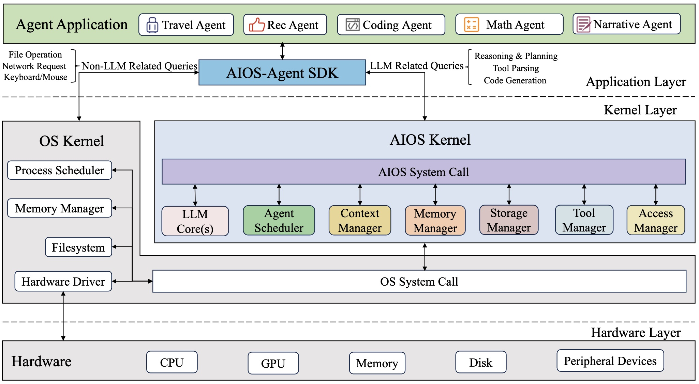
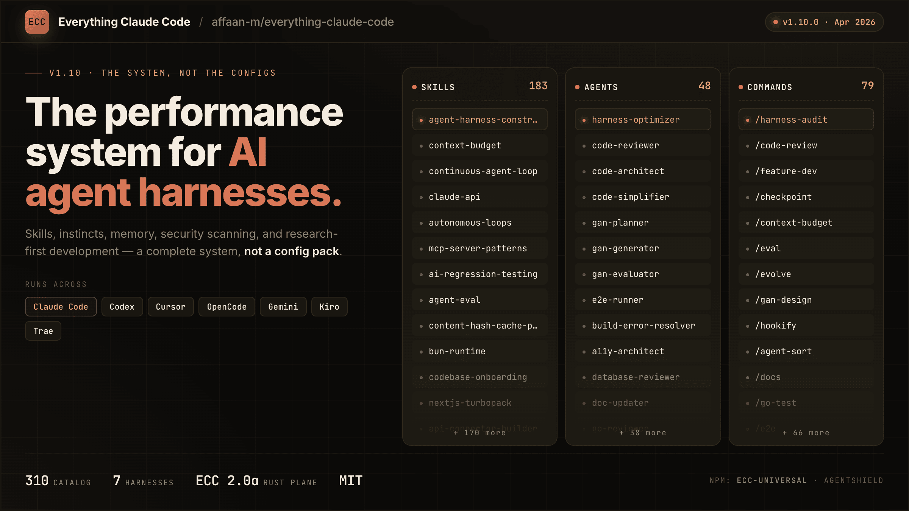

KI
Seit einiger Weile beschäftigt mich die Frage, wie ich Teile von Routineaufgaben und zur Unterstützung der Kreativität in Forschung und Lehre ein Agentic OS bzw. OS-Kernel für die Forschung einsetzen kann. Es sollte in der Lage sein, valide Workflows mit definierten Skills ausführen können und über lernfähige Bibliotheken mit Skills, Plugins, Routinen etc. (sog. research stacks) verfügen. Das hat gewisse Ähnlichkeiten mit der Architektur von AIOS, einem „AI Agent Operating System, which embeds large language model (LLM) into the operating system and facilitates the development and deployment of LLM-based AI Agents” (Agiresearch/Aios auf GitHub).

Im Rahmen der Recherche bin ich auf Everything Claude Code (ECC) gestoßen, das eine Sammlung von 75 Skills, 71 Agents, 33 Hooks und unzähligen Commands in Claude Code einbringt. Das Repo ist in der Lage, professionelle Forschungsaufgaben semi-autonom auszuführen.

Zum Kern-Workflow gehört der Befehl /everything-claude-code:plan, der einen spezialisierten Skill startet, der Rückfragen stellt, Optionen abwägt und auf explizite Bestätigung wartet, bevor eine einzige Zeile Code entsteht. Das kann für die Planung eines neuen Features im aktuellen Projekt als auch für das Design einer neuen Systemarchitektur genutzt werden.
Dasselbe gilt für testgetriebene Entwicklung: Der /tddWorkflow richtet automatisch ein Test-Framework ein, schreibt die Tests vor der Implementierung, und setzt 80 % Coverage als Zielwert. Er wiederholt die Prozedur, bis der gewünschte Zielwert erreicht ist, und bessert von Schritt zu Schritt nach.
Eine interessante Frage wirft das ECC aber noch auf: Wenn ein solches Werkzeug ermöglicht, gute Praktiken für Arbeitsroutinen zu externalisieren, ersetzt es dann nicht mein Urteilsvermögen? Was ist der eigentliche Mehrwert außer Zeitersparnis?
Ich tendiere zu einer differenzierten Antwort. Tools wie ECC senken die Hürde für strukturiertes Arbeiten erheblich. Wer gerade anfängt, bekommt ein professionelles Scaffold ohne jahrelange Lernerfahrung. Wer schon lange dabei ist, muss weniger Disziplin aufbringen, um bekannte Muster einzuhalten.
Was kein Werkzeug ersetzen kann: das Wissen, wann man von der Vorlage abweicht und einen anderen Weg einschlägt, z. B. um neue wissenschaftliche Seitenwege einzuschlagen. Tests in einem Loop durchzuführen, ist sehr wertvoll, aber das LLM weiß jedoch nicht, welche Tests tatsächlich sinnvoll sind. Auch die Erreichung irgendeines prozentualen Qualitätsziels könnte täuschen. Die menschliche Arbeit bleibt in der Überprüfung von Zielen, eingesetzten Mitteln und dem Ergebnis.
Was mich daran besonders interessiert: Das Grundprinzip ist dasselbe wie beim digitalen Gärtnern. Ein Wissensmanagement-System externalisiert implizites Denken in sichtbare Struktur – damit es navigierbar, teilbar und überprüfbar wird. ECC macht dasselbe mit Lernerfahrung: Es externalisiert Intuition in ausführbare Schritte.
Beides funktioniert am zuverlässigsten, wenn die Person dahinter versteht, warum die Struktur so ist, wie sie ist. Ein digitaler Garten ohne Urteilsvermögen ist nur eine Ablage. Ein KI-Workflow ohne Verständnis ist nur Automation.
Eine ähnliche Fragestellung hatte ich schon einmal in dem Beitrag Vom wiki LLM zum Reasoning-Linter – KI als Denkpartner, nicht Denkersatz – entwickelt.
Notizen entwickelt nach Ansehen des Videos von Andrew Korshak.